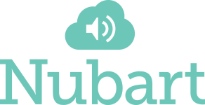

Data di entrata in vigore: 1° ottobre 2025
Versione: 1.1 (Ultimo aggiornamento: 22 gennaio 2026)
Il presente Accordo sul trattamento dei dati ("DPA") fa parte dei Termini e condizioni ("Accordo") tra:
(collettivamente, le "Parti")
1.1. Per "Leggi sulla protezione dei dati" si intendono tutte le leggi e i regolamenti applicabili relativi al trattamento dei dati personali e alla privacy, compreso il Regolamento generale sulla protezione dei dati (UE) 2016/679 ("GDPR"), il GDPR del Regno Unito e qualsiasi legge nazionale di attuazione applicabile.
1.2. "Dati personali", " Titolare del trattamento", "Responsabile del trattamento", "Interessato", "Trattamento" e "Violazione della sicurezza dei dati personali" avranno il significato loro attribuito nel RGPD.
1.3. "Sub-responsabile del trattamento" indica qualsiasi responsabile del trattamento terzo incaricato da Nubart per assistere nell'adempimento dei propri obblighi relativi alla fornitura del Servizio.
2.1. Ruolo delle Parti: Le Parti riconoscono che, ai fini delle Leggi sulla protezione dei dati, il Cliente è il Titolare del trattamento e Nubart è il Responsabile del trattamento.
2.2. Ambito di applicazione: il presente DPA si applica al trattamento dei dati personali da parte di Nubart per conto del Cliente nel corso della fornitura del servizio Nubart TRANSLATE ("Servizio").
2.3. Obblighi del responsabile del trattamento: Nubart dovrà:
3.1. Autorizzazione: il Cliente concede a Nubart un'autorizzazione generale a incaricare Subresponsabili del trattamento per fornire il Servizio.
3.2. Sub-responsabili attuali: il Cliente acconsente alla nomina dei Sub-responsabili del trattamento elencati nell'Allegato III del presente DPA.
3.3. Modifiche: Nubart informerà il Cliente di qualsiasi modifica prevista relativa all'incorporazione o alla sostituzione di Subincaricati del trattamento. Il Cliente può opporsi a tali modifiche entro 14 giorni per motivi ragionevoli di protezione dei dati. Se le Parti non riescono a risolvere l'obiezione, il Cliente può rescindere il Contratto in relazione al Servizio interessato.
3.4. Responsabilità del Sub-responsabile del trattamento: Nubart si assicurerà che ogni Sub-responsabile del trattamento sia vincolato da termini scritti che garantiscano almeno il livello di protezione dei dati richiesto dal presente DPA. Nubart rimane responsabile nei confronti del Cliente per l'adempimento dei propri obblighi ai sensi del presente DPA, anche quando il Trattamento è effettuato da un Sub-responsabile del Trattamento, ma Nubart non è responsabile per eventi o guasti al di fuori del suo ragionevole controllo.
4.1. Luoghi di trattamento: il Cliente riconosce che l'infrastruttura di trattamento principale di Nubart si trova in Irlanda (UE), con un trattamento aggiuntivo effettuato da Sub-responsabili del trattamento come specificato nell'Allegato III. Alcuni Sub-responsabili del trattamento possono avere sede al di fuori dello Spazio economico europeo (SEE), anche negli Stati Uniti.
4.2. Trasferimenti: Nella misura in cui Nubart trasferisca Dati Personali a un Sub-responsabile del Trattamento situato al di fuori dello Spazio Economico Europeo (SEE) che non abbia ricevuto una decisione di adeguatezza dalla Commissione Europea:
Quando i Dati Personali vengono trasferiti a Responsabili del Trattamento situati al di fuori del SEE in un paese senza decisione di adeguatezza, Nubart garantirà che tale trasferimento sia soggetto alle garanzie appropriate ai sensi del Capitolo V del RGPD.
5.1. Nubart assisterà il Cliente, nella misura consentita dalla legge e tenendo conto della natura del trattamento, mediante misure tecniche e organizzative adeguate per adempiere all'obbligo del Cliente di rispondere alle richieste di esercizio dei diritti dell'interessato (ad esempio, accesso, rettifica, cancellazione).
5.2. Gestione operativa delle richieste. Gli interessati (come relatori o amministratori del Cliente) eserciteranno i loro diritti di accesso, rettifica, cancellazione, limitazione e opposizione direttamente nei confronti del Cliente, in qualità di Titolare del trattamento. Nubart assisterà il Cliente quando questi ne farà richiesta per iscritto (ad esempio, tramite un ticket di assistenza o un'e-mail). Tale assistenza consisterà, nella misura in cui sia tecnicamente possibile e in base alla progettazione del Servizio e all'opzione di conservazione scelta, nel consultare, fornire o cancellare i Dati Personali dell'evento relativi all'evento o agli eventi indicati e nel confermare al Cliente, entro un termine ragionevole, che la cancellazione è stata effettuata. A causa della progettazione del Servizio, l'accesso degli ascoltatori è anonimo e Nubart non è in grado di identificare i singoli ascoltatori; in questi casi, Nubart può solo cancellare i Dati a livello di evento, sempre seguendo le istruzioni del Cliente.
6.1. Nubart informerà il Cliente senza indebito ritardo (e in ogni caso entro 72 ore) dopo essere venuta a conoscenza di una violazione della sicurezza dei dati personali che riguarda i dati personali del Cliente.
6.2. La notifica descriverà la natura della violazione, le categorie di dati interessati e le misure adottate o proposte per affrontare la violazione.
7.1. Su richiesta, Nubart fornirà al Cliente le informazioni necessarie per dimostrare la conformità al presente DPA.
7.2. Se è necessaria un'ulteriore verifica, il Cliente può effettuare un audit (comprese ispezioni) a spese del Cliente, durante il normale orario di lavoro e senza interrompere le operazioni commerciali di Nubart. Il Cliente dovrà fornire un preavviso scritto di almeno 30 giorni.
8.1. Conservazione e cancellazione dei dati: La conservazione e la cancellazione dei Dati Personali sono regolate dall'opzione di conservazione selezionata dal Cliente nel modulo d'ordine al momento dell'acquisto, come specificato nella Sezione 5.3 dei Termini e Condizioni Generali (Cancellazione Immediata, Cancellazione in 30 Giorni o Conservazione a Tempo Indeterminato con Limiti di Utilizzo Rigorosi).
8.2. Cessazione del servizio: alla cessazione o alla scadenza del Contratto, Nubart, a discrezione del Cliente e in base all'opzione di conservazione precedentemente selezionata:
8.3. Conservazione legale: gli obblighi di cui sopra sono soggetti a qualsiasi requisito previsto dalla legge applicabile affinché Nubart conservi determinati Dati personali (ad esempio, per scopi fiscali, contabili o di conformità legale).
8.4. Richieste di cancellazione ad hoc: il Cliente può richiedere la cancellazione anticipata dei Dati relativi a eventi specifici come previsto dalla Sezione 5.3 dei Termini e Condizioni Generali, contattando l'Assistenza Nubart all'indirizzo info@nubart.eu.
Categorie di interessati:
Categorie di dati personali:
Natura del trattamento: Raccolta, registrazione, trasmissione, traduzione (tramite IA), archiviazione ed eliminazione al fine di fornire servizi di traduzione in tempo reale.
Frequenza: su base continuativa durante gli Eventi attivi.
Durata: come stabilito dalle politiche di conservazione nell'Accordo (modalità predefinita o transitoria) o fino a quando non viene richiesta la cancellazione.
Nota: i seguenti fornitori terzi sono autorizzati a trattare i Dati Personali per fornire il Servizio. Il Cliente riconosce che questo elenco può essere aggiornato.
| Nome del responsabile | Servizio fornito | Luogo di trattamento | Meccanismo di trasferimento |
|---|---|---|---|
| Heroku (Salesforce) | Hosting e gestione delle applicazioni | Irlanda (UE) | Clausole contrattuali standard (CCT) |
| Amazon Web Services (AWS) | Infrastruttura cloud, trascrizione, traduzione, sintesi vocale, archiviazione file Dati trattati: input audio (transitorio solo durante la trascrizione), trascrizioni, traduzioni, documenti contestuali, metadati degli eventi. Misure di sicurezza tecniche: crittografia AES-256 inattiva, TLS 1.2+ in transito, infrastruttura certificata ISO 27001 e SOC 2. Esclusione dall'addestramento dell'IA: Nubart ha attivato la configurazione di esclusione di AWS per impedire l'utilizzo dei dati del Cliente per il miglioramento del servizio o l'addestramento di modelli di IA. |
Irlanda (UE) | Clausole contrattuali standard (SCC) |
| MongoDB Atlas | Hosting di database | Irlanda (UE) | Clausole contrattuali standard (CCT) |
| DeepL SE | Servizi di traduzione con IA | Germania (UE) | N/A (all'interno del SEE) |
| ElevenLabs Inc. | Servizi di sintesi vocale (TTS) Lingue elaborate: Ebraico, Greco, Bulgaro, Ucraino, Estone, Indonesiano, Lituano, Lettone, Slovacco, Sloveno, Tailandese, Croato, Serbo, Vietnamita, Ungherese, Filipino. Tutte le altre lingue (tra cui inglese, tedesco, francese, spagnolo, italiano, portoghese, olandese, polacco, ecc.) sono elaborate esclusivamente tramite Amazon Web Services all'interno dell'UE. Dati trattati: solo testo tradotto per la conversione in audio vocale. Nessuna registrazione audio della voce originale del parlante, nessun dato personale dei parlanti/ascoltatori, nessun metadato degli eventi. Misure di sicurezza tecniche: crittografia TLS 1.3 in transito, nessuna memorizzazione persistente del testo elaborato dopo la conversione, divieto contrattuale di addestramento dell'IA e sviluppo di modelli, controlli di accesso API. Esclusione dell'addestramento dell'IA: ElevenLabs è contrattualmente vietato utilizzare i dati del Cliente per addestrare modelli di IA o per qualsiasi scopo diverso dalla fornitura del servizio TTS. |
USA | Clausole contrattuali standard (SCC) ElevenLabs Inc. ha firmato un accordo sul trattamento dei dati (disponibile su elevenlabs.io/dpa) che incorpora le clausole contrattuali standard. |